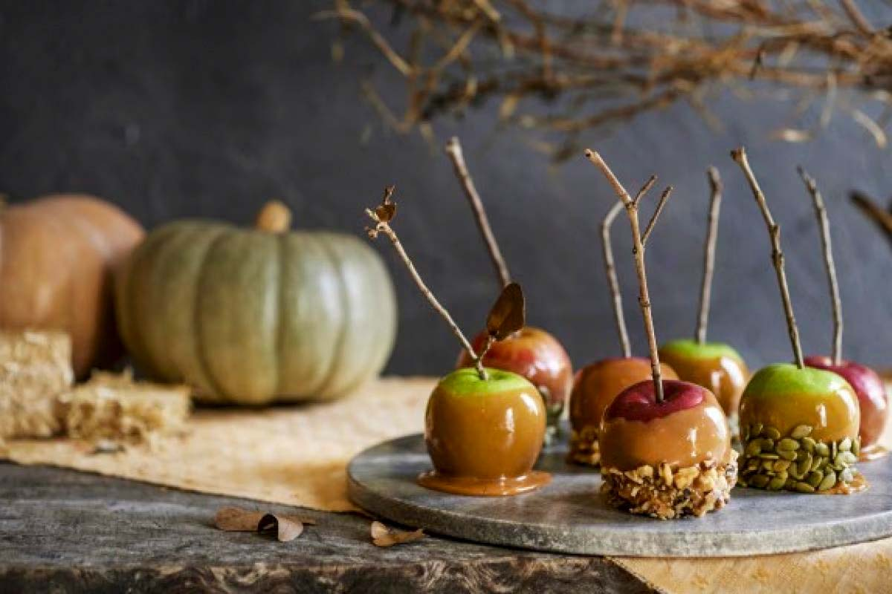

FREYJA'S ENCHANTED APPLES OF FOLKVANGR

Description
“Tempt your taste buds like Freyja tempts warriors to Folkvangr… but with fewer battles and more caramel!”
Legend has it, these salted caramel apples were once gifted by Freyja to Odin, causing him to momentarily forget about Valhalla and consider making her battlefield picnics a thing. A perfect blend of sweet and salty, this autumnal treat captures the essence of the harvest season, while invoking the indulgence and beauty of the Viking goddess herself. With each bite, you’ll be transported to Freyja’s meadow of eternal peace—unless you burn the caramel, in which case Loki's probably up to something again.
Ingredients
- Apples: Crisp and shiny, like the ones Freyja herself would pluck to lure warriors into her hall. Preferably from an orchard, not a grocery store (but Freyja won’t judge).
- Sugar: Sweet, but not as sweet as the allure of Freyja's charm.
- Butter: Melted like the hearts of those who gaze upon Freyja (or after a few seconds in the microwave).
- Heavy cream: Because the goddess of love does nothing halfway.
- Flaky sea salt: Harvested from the salty tears of a thousand lovesick warriors.
Directions
- Start by washing and drying your apples, as Freyja would her magical cloak of falcon feathers.
- In a pot over medium heat, melt butter, then add sugar and a splash of water. Stir with the grace of a Valkyrie wielding a sword.
- Bring the mixture to a boil, watching it carefully like Freyja watches over her cats—don’t let it burn unless you’re aiming for Loki-style chaos.
- Once the sugar dissolves and turns a golden amber, remove from heat and stir in the cream, channeling the patience of a goddess (because it might bubble furiously).
- Dip each apple into the warm caramel, swirling it as if enchanting warriors with a simple glance.
- Sprinkle with flaky sea salt, just enough to honor Freyja’s dual nature: sweet yet salty, fierce yet loving.
- Let the apples cool on parchment paper, ideally not in a meadow, but in a cool, Viking-approved place.